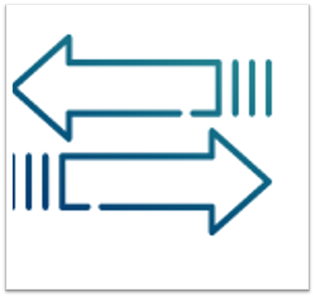

BEST INTERNET PROVIDER |
 |
|---|
BEST INTERNET PROVIDER |
|
|---|
INTERNET ON OPTICSfor business |
|---|
Netflix offers the connection of high-speed Internet access using Fiber-optic technology to the Building (optics to the building), which means using fiber-optic cable instead of copper. Connection via an optical communication channel is distinguished by such criteria as increased reliability and an increase in the bandwidth of the channel, which plays a key role in choosing an Internet provider. Today, high-speed unlimited Internet in Kazakhstan is a prerequisite for successful business development.
| Number  |
Activity profile |
Your need is: 550Mbit/sec |
|---|---|---|
|  |  |
|||
|---|---|---|---|---|
| Symmetric data transmission channel | Internet at speeds up to 10 GB / sec at favorable rates | Data channel redundancy | Static IP address | Technical support 24\7 |
HIGH-SPEED INTERNET CONNECTIONThe company's specialists organize a dedicated data transmission channel between the customer's office and the NetFix communication node with a bandwidth of up to 10 GB/sec and symmetric traffic. To connect the high-speed unlimited Internet service in your office, we use our own optical network with a high bandwidth of more than 500 km and channel redundancy, which allows you to achieve a network fault tolerance of up to 99.5%. We are a professional staff of IT specialists, a 24-hour network monitoring system, our own installation teams, modern equipment, favorable tariffs and affordable prices. |
|---|